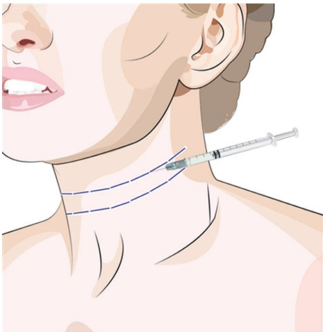
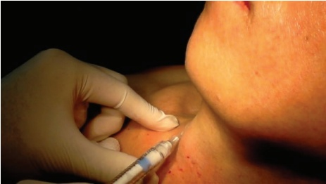
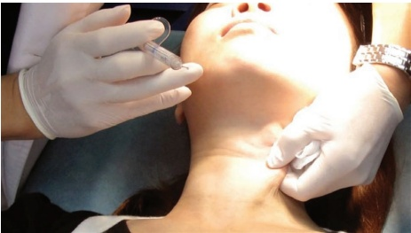
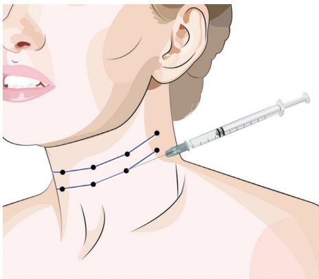
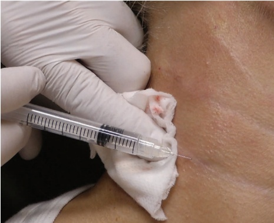
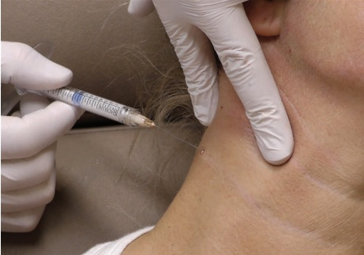
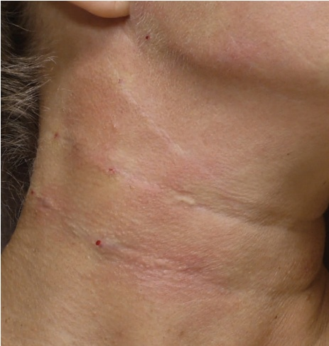

28 颈部、胸部和腹部：水平颈纹
颈部、胸部和腹部的水平颈纹
28
YATES YEN-YU CHAO AND JANI VAN LOGHEM
28.1 引言
将可注射填充剂应用于颈部区域并不常见。大多数此类治疗都集中于使用生物刺激剂，如高倍稀释的羟基磷灰石钙（CaHA）来诱导胶原形成，以改善皮肤松弛的老化症状。然而，早在 CaHA 以稀释形式用于改善皮肤质量之前，它就已经发表了作为矫正水平颈纹的治疗方法。
水平颈纹是沿颈部曲线分布的、多个线性的颈部皮肤凹陷，呈水平分布。患有颈纹的人比例相当高。这些纹路可以在较年轻时就可见，因此不一定属于老年性改变；然而，随着年龄增长导致软组织松弛，水平颈纹看起来会更加明显。表面的光老化也会因额外的细纹和原有纹路的加深而使问题恶化。因此，水平纹常被解读为衰老的标志，并让大多数患有此症状的人感到不悦。除了皮肤、软组织和筋膜的松弛外，脂肪堆积还可能通过与褶皱旁凹陷和突出的脂肪间隙形成对比，加重水平纹的程度。
尽管治疗这些水平纹的方法有限，但并非易事。手术颈提升和胸肌成形或固定可以收紧皮肤并改善轮廓，但对这些纹路似乎效果不佳。能量型组织紧致化，如射频或微焦超声，可以改善皮肤质量和使其更紧实，但通常对减轻这些纹路帮助不大。其原因在于颈部线条形成的机制不仅与组织松弛有关。
除了脂肪堆积或更严重的衰老患者外，这些水平颈纹的凹陷通常非常浅。作者发现，大多数这些水平纹的宽度小于 1 mm，深度小于 1 mm。对于像水平颈纹这样浅表的凹陷，皮肤的凹陷位于肌肉（胸肌）上方，其部分皮下牵拉与手腕和面部静态皱纹上的线性标记相似。
面部皱纹治疗、激光焕肤或分层治疗通常可以改善这些细纹；然而，对于更深的纹路效果不佳。使用深层和浅层的可注射填充剂来矫正面部的静态皱纹可能更有效。考虑到我们颈部皮肤非常薄且活动度高，该区域使用的填充剂应无胶体光散射（也称为廷德尔效应），并且在反复运动后迁移或移位的倾向性小。由于这些线性凹陷的体积缺乏非常微小，皮下需要填充的体积也应该很小。质地过软或提升能力不足的填充剂无法精确填补间隙。如果用于填充这些纹路的填充剂过于柔软或具有较强的扩散趋势，可能会可能增强邻近皮肤，从而导致不自然的隆起环状结构。
作者尝试了许多不同的材料，发现稀释或高倍稀释的 CaHA 对此适应症非常合适。事实上，稀释的 CaHA 相较于其他选择具有许多优势。首先，可注射 CaHA 具有很高的提升能力、高弹性、高粘度。即使 CaHA 填充剂与利多卡因稀释，其弹性特性仍能很好地保持，尽管会损失部分粘度。粘度较低的稀释 CaHA 可以轻松地以极少量用于填充并可以被良好塑形。稀释填充剂保留的弹性不会减弱这些凹陷处的填充和提升效果。在稀释混合物的水分消失后，CaHA 填充剂的行为更接近原始状态，具有较小的扩散或变形倾向。
CaHA 产品呈白色，而非透明，不会产生不良的光散射效应。CaHA 的颗粒非常小（直径为 25–45 μm），因此不应引起结节样外观。已证明 CaHA 可以诱导胶原和弹性蛋白的形成，有助于在维持精确注射位置的同时改善衰老解剖结构 [1]。然而，部署这些极少量的稀释 CaHA 并不容易。大多数医生报告说，控制稳定的流速并在非常浅的平面内注射，同时保持在同一注射平面上，是非常具有挑战性的。由于流速必须非常有限且注射层次非常浅，只有锐针器械才能完成此操作。当使用 27G 针头作为 CaHA 注射的常规针头时，稀释后的填充剂仍然具有弹性，并且可以很容易地从针头中挤出。这使得用稳定的控制力推动活塞变得困难。根据作者的经验，注射层次位于浅层皮下组织。由于少量
羟基磷灰石钙（CaHA）软组织填充剂
脂肪的量分布在胸肌筋膜（platysma muscle）上方，如果皮下脂肪非常薄，注射可能位于略高于肌肉的水平。注射深度应约为 1–1.5 mm [2]。由于颈部是一个具有圆形表面的结构，因此必须通过另一只手将皮肤拉平来控制这一 1–1.5 mm 的深度，同时用注射手将针平行于皮肤表面插入。为更好地控制深度，优选使用 12.7 mm 的针头而非更长的针头。通常情况下，CaHA 与麻黄素（lidocaine）的 1:1 浓度稀释效果最佳，但对于高加人族人群——或对于皮肤较薄的患者——将 CaHA 一份与麻黄素两份混合可能更适合水平颈纹的皮肤状况。
在进行水平颈纹年轻化时需要考虑的危险区域包括颈静脉和颈动脉。
28.2 使用稀释和高倍稀释 CaHA 进行水平颈纹矫正的针头技术
注射定位，参见图 28.1。
28.2.1 分步技术
-
对颈部进行消毒并标记出水平颈纹。注意浅静脉（superficial jugular veins）的位置。
-
使用高倍稀释的 CaHA（1.5 mL CaHA 与 1.5/3 mL 的稀释麻黄素混合）和一根锐利的 27G、1.8 cm 针头。

-
采用水平入路，使针头切口朝上（bevel upward）。
-
将皮肤拉向针的方向（图 28.2）。
-
将针头完全插入深层真皮层，深度约为 1–1.5 mm。
-
在牵拉的同时，缓慢注射约 0.05 mL，形成逆行线性丝状。
-
根据需要塑形，让皮肤在两指之间滚动（图 28.3）。
-
重复操作，直到所有线条得到矫正。
28.3 使用稀释和高倍稀释 CaHA 进行水平颈纹矫正的钝性套管针技术
注射定位，参见图 28.4。
28.3.1 分步技术
-
对颈部进行消毒并标记出水平颈纹。注意浅静脉的位置。
-
在进入点使用局部麻醉剂。
-
用 23G 针头打一个预孔。从水平颈线的最外侧点向正中线方向操作。新的进入点应设置在先前用 CaHA 注射结束的位置（图 28.5）。




-
使用高倍稀释的 CaHA（1.5 mL 的 CaHA 与 0.5 mL 利多卡因稀释）配合 25G、38 mm 的钝性套管针。
-
保持在真皮-真皮下交界层表浅。为避免沉积，重要的是不要过浅（图 28.6）。
-
拉伸皮肤并将钝性套管针推进皱纹内。采用扇形技术注射小剂量填充物，使切口朝上。纠正线条直到完全充盈。不要过度纠正（图 28.7）。
-
重复此过程，直到所有线条都得到矫正。


28.4 术后护理
每次进行线填充和整个操作结束后，进行充分的按摩至关重要，以确保所有填充材料均匀分布，没有局部积聚。应告知患者预期会出现肿胀，这是暂时的，但可能持续长达五天。由于该区域血管丰富，也可能出现瘀伤。因此建议做好防晒。
居家按摩不是必需的，但如果患者希望进行，建议限制为每天两次使用护肤品进行轻柔按摩。
28.5 实现最佳效果的附加治疗
由于水平颈纹属于颈部区域，可以考虑更全面的颈部抗衰老方案。能量型组织紧致化，如射频或微焦超声，可以改善皮肤质量并使其收紧，类似于化学焕肤。有关使用稀释的羟基磷灰石钙（CaHA）治疗此适应症的更多细节，请参阅本书中关于颈部抗衰老的章节。作为修补性治疗，可以在进行 CaHA 注射数月后考虑使用低分子量透明质酸（HA），采用褪色技术进一步平滑水平颈纹。
参考文献
[1] Y. A. Yutskovskaya, E. A. Kogan, "Improved neocollagenesis and skin mechanical properties after injection of diluted calcium hydroxylapatite in the neck and décolletage: A pilot study," J Drugs Dermatol, vol. 16, no. 1, pp. 68–74, 2017.
[2] Y. Y. Chao et al., “A novel injection technique for horizontal neck lines correction using calcium hydroxylapatite,” Dermatol Surg, vol. 37, no. 10, pp. 1542–1545, 2011.